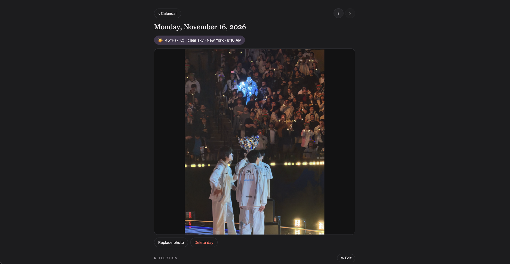
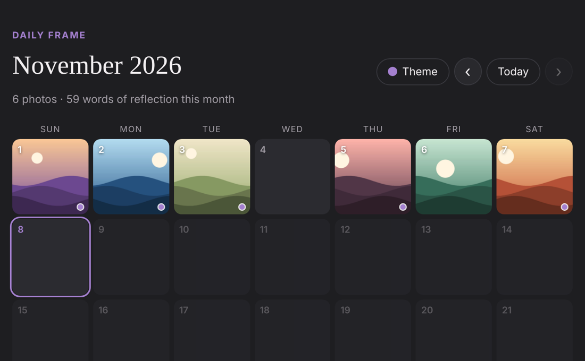
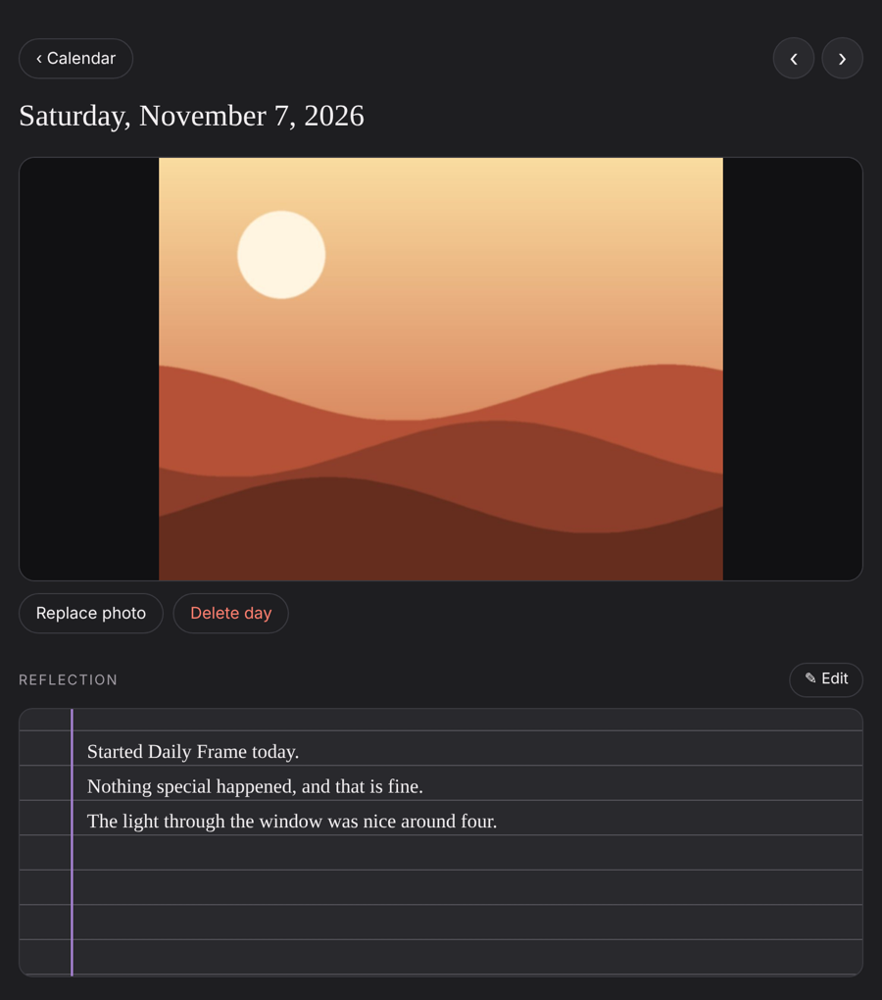

For anyone tired of performing their life on social media: take one photo a day, write one honest reflection, and keep it just for yourself.
Current Status: Build 3: live on the web, with a security audit (SECURITY.md)
Live app: daily-frame.onrender.com (works on a phone; the first visit can take about a minute while the free server wakes up). Screenshots below.



Who is this for? Me first, then classmates in my program who already use Instagram but feel pressure to post a "perfect" photo and caption. I can reach both every week.
The painful "Before" workflow: I take photos all day and they sink into a camera roll of thousands of images. The few I share go through a loop of choosing the best shot, editing it, rewriting the caption, posting, and then checking for likes. The photo ends up being for an audience, and I almost never write down how the day actually felt. A physical journal would fix that, but it just is not possible some days: I do not always have a notebook with me, I am on the go between classes, and getting a photo onto paper takes printing and gluing. When I want to look back at a month, there is no single place that shows it.
The "After" workflow with this product: Once a day I open Daily Frame, tap today, add any photo (it does not need to be good), and write a few honest lines. It saves automatically and takes about a minute. Because it is digital, I can do it anywhere (on the train, between classes, in bed) with a photo I already took on my phone, which makes it a journal I can actually keep up with. The month view becomes a private visual diary I can scroll back through, with no likes, followers, or comments.
Biggest risk: That people keep a daily photo and reflection habit when there is no social reward (likes or followers) pulling them back. A second, technical risk came with this build: adding an outside API to a journal that promises "everything stays on this device" could leak private data or my API key.
How Build 2 tests it:
day_opened, photo_added, reflection_done, weather_captured) plus pageviews and session replays show whether I and my pod testers actually come back on separate days, and where people stop in the flow. These events carry only counts (for example, word count), never the photo or the text.day_opened event records how many days back each opened day is)..env and is used by the local server, never by the browser. Location is rounded to about 1 km before it is sent. Session replays block photos and reflections (they show only clicks and layout).How the app works (one user action, end to end):
http://localhost:8000. server.py (Python, standard library only) serves the app files from app/..env) and calls /api/weather on my own server.server.py adds the secret key from .env, calls OpenWeatherMap's Current Weather API, and returns only temperature, conditions, icon and city.photo_added and weather_captured events.Hosting, database and security (new in v3):
server.py I use locally, set up by render.yaml and redeployed from main with Render's Manual Deploy button. This Product Page stays on GitHub Pages. GitHub Pages alone could not work for the app, because it cannot run the server that hides the weather key./api/weather has a rate limit (10 calls per visitor per minute, 50 for everyone), so a script cannot burn the free quota; it answers 429 after that. Security headers block other sites from framing the app. Full audit, including what I tried against the app and what is still open, in SECURITY.md.Simple Architecture: [Photo + reflection] → [Browser app: HTML/CSS/JS, IndexedDB on device] → [/api/weather on the Python server, hosted on Render, rate-limited] → [OpenWeatherMap Current Weather API, key in Render's environment variables] → [Weather saved with the day's entry] · [PostHog: pageviews, clicks, replay]
Cost per run: One weather call per post (only the first save of the day; later edits reuse the saved snapshot). On OpenWeatherMap's free plan (60 calls per minute, 1,000,000 per month) that is $0.00 per run. Even on the paid Startup plan (£30 for 10M calls a month) it would be well under $0.0001 per post. PostHog is free up to 1M events and 5,000 replays a month. No AI model yet, so no token cost.
app/. Month calendar with a thumbnail on each day that has a photo, a day view to add or replace a photo and write a reflection, autosave, day-to-day navigation, and delete. Future days are locked. Accepts JPG, PNG, HEIC (iPhone), WebP, AVIF, GIF and BMP, with drag and drop. Light (creme) and dark (grey) modes with five accent colors. Nov 8: reflections now lock after you click Done (click Edit to change them), and the writing area has notebook lines. Photos are resized to 1600px and saved in the browser (IndexedDB), so nothing leaves the device. Screenshots are above.git clone, git pull and python3 -m http.server. Two mistakes taught me the most: the clone command has to be on one line with the URL, and the server shows whatever folder you start it in (I started it from my home folder by accident and saw all my files). Also learned that a browser can store photos locally with IndexedDB, and that phone photos are large, so resizing them matters. Terminus Episodes 1 and 2 and the Week 1 memo: in progress, finishing before Nov 10.server.py, a tiny Python server that serves the app and calls OpenWeatherMap with the key from .env, so the key never reaches the browser. PostHog installed on this page and the local app with pageviews, clicks (autocapture), session replay, and named events (day_opened, photo_added, reflection_done, weather_captured, weather_failed). PRD v2 above, and setup and project structure in AGENTS.md.python3 server.py instead of python3 -m http.server, because a plain file server cannot hide the key. PRD v2 adds the privacy risk, the end-to-end flow and cost per run.server.py, the weather feature and the PostHog setup, and drafted PRD v2, AGENTS.md and this log. I chose the feature, picked the weather design (snapshot today rather than paying for history), gave it my PostHog login, and reviewed the result. Because I did not commit the Wednesday work, I missed the "commits on two different days" requirement for Build 2. Next week I will commit work in progress as I go, even when it is not working yet.SECURITY.md. AGENTS.md now has Shipping steps, an "Ask me first" list, and rules from real agent mistakes. PostHog now tags live visits as live_app..env file into Render's environment variables so it never touches GitHub. Running the security review with Claude showed me how a public URL changes things: anyone can call my weather route in a loop, so I added a rate limit and learned what a 429 response means. I also learned to tell a secret key (OpenWeatherMap, must stay on the server) from a public one (PostHog, safe in the browser), how to search my whole Git history for leaked keys, and that a free Render server sleeps after 15 minutes, so the first visit is slow. Writing an "Ask me first" list made me think about which agent actions could actually hurt me: deleting data, touching keys, and spending money.